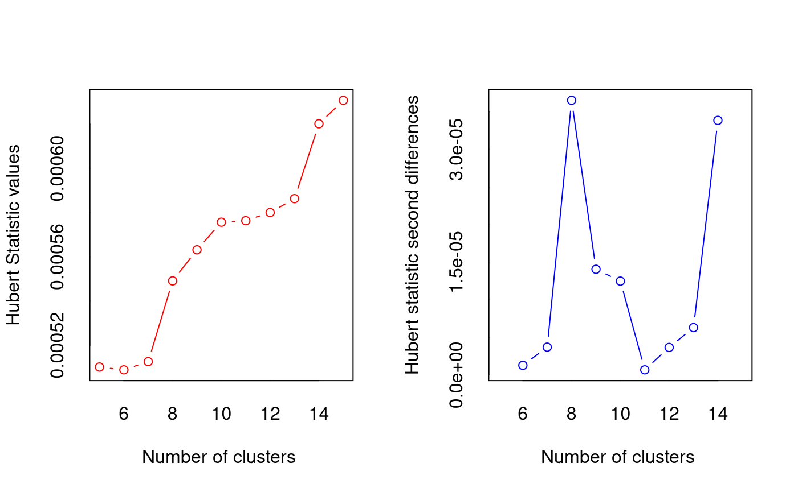
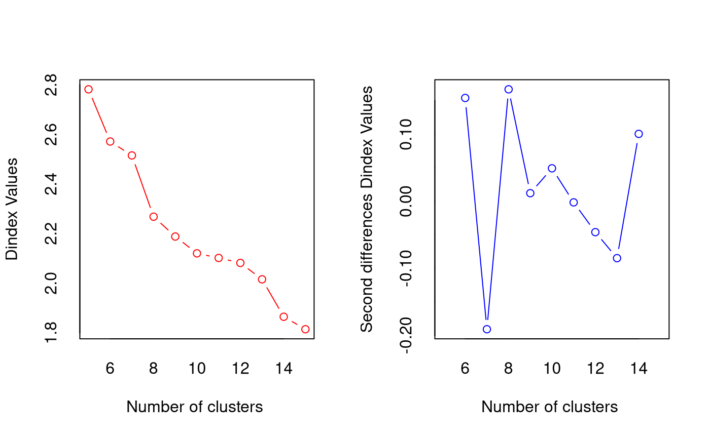
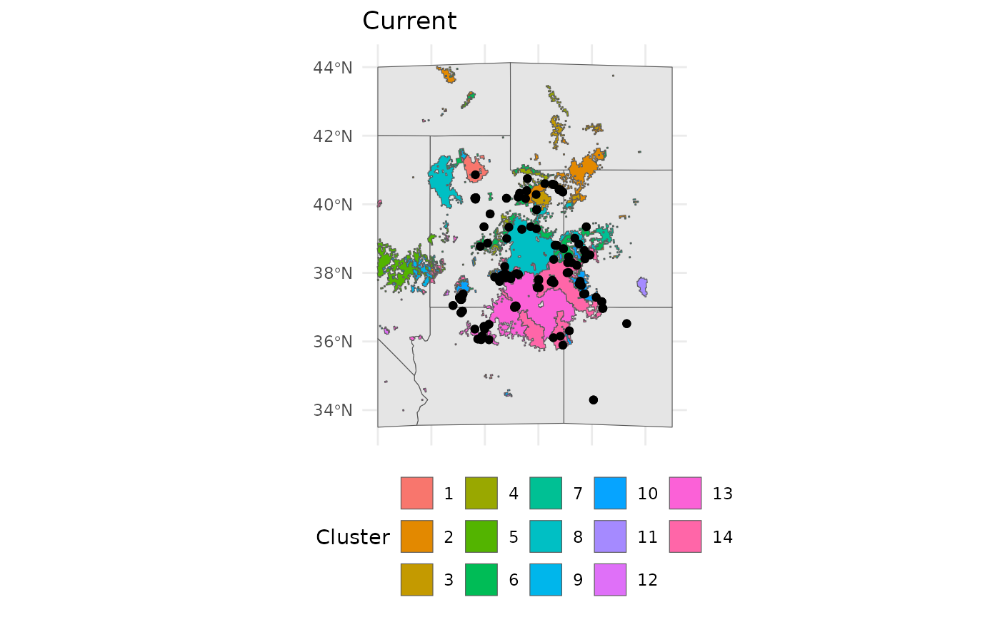

Overview
We have already shown that the beta-coefficients from species
distribution models can be used in hierarchical clustering to group a
species populations into clusters that experience more similar - and
relevant to their ecology - climate. While running
EnvironmentalBasedSample we focus on also optimizing the
species occupied range using moran eigenvector matrix surfaces (MEMs, or
PCNM). In this alternative approach we drop the PCNMs from the SDMs and
focus solely on environmental predictors, and work to identify clusters
in current environmental space, and then classify
future environmental (and geographic) space with these
cluster parameters. This gives us sets of areas with populations that
may be more pre-adapted to future conditions.
In addition to transferring the realized environmental clusters of populations forward, we also identify novel climate spaces, using MESS (Elith 2010), and hierarchical clustering. This results in us having n identified clusters, and we can traverse the clustering branches to determine which existing clusters are most similar to novel clusters.
This is the sole workflow in safeHavens that seeks to
link current climates to future scenarios, and directly suggest how the
size of clusters may change, where they will shift to, and allow a
germplasm curator to identify relevant seed sources for predictive
provenancing. The approach employed here is adequate to guide
current collections, however decisions on what sources to use
at a particular restoration site are relatively well identified by tools
such as the Seed Lot Selection Tool in North America, and COSST
in South America.
Analysis
This workstream leans heavily on the
EnvironmentalBasedSample workflow, and passes it’s final
objects off to PolygonBasedSample for completion. Please
review Species Distribution Models and
Getting Started before proceeding here.
Data prep
This workflow will require the geodata package;
geodata is used for retrieving climate data from a variety
of sources as raster data. In this vignette we will use Worldclim. For most
safeHavens users around the world this may be your ideal
source for climate data. geodata is developed and
maintained by Robert Hijman, similar to terra, and
dismo, which are doing a ton of heavy lifting internally on
our functions.
library(safeHavens)
library(terra)
library(geodata)
library(sf)
library(dplyr)
library(tidyr)
library(ggplot2)
library(patchwork)
set.seed(22)For this example we will leverage data from GBIF, and shift our geographic focus to the Colorado Plateau in the Southwestern USA. The Colorado Plateau is predicted to experience some of the highest rates of climate change on the planet, and is already an area with considerably native seed development activities. For our focal species we will use Helianthella microcephala for no other reason than that it exists in relatively homogenous portions of the Colorado Plateau - meaning we can download relatively coarse rasters for the vignettes, and that it has a stunning inflorescence.
cols = c('decimalLatitude', 'decimalLongitude', 'dateIdentified', 'species', 'acceptedScientificName', 'datasetName',
'coordinateUncertaintyInMeters', 'basisOfRecord', 'institutionCode', 'catalogNumber')
## download species data using scientificName, can use keys and lookup tables for automating many taxa.
hemi <- rgbif::occ_search(scientificName = "Helianthella microcephala")
hemi <- hemi[['data']][,cols] |>
drop_na(decimalLatitude, decimalLongitude) |> # any missing coords need dropped.
distinct(decimalLatitude, decimalLongitude, .keep_all = TRUE) |> # no dupes can be present
st_as_sf(coords = c( 'decimalLongitude', 'decimalLatitude'), crs = 4326, remove = F)
western_states <- spData::us_states |> ## for making a quick basemap.
dplyr::filter(NAME %in%
c('Utah', 'Arizona', 'Colorado', 'New Mexico', 'Wyoming', 'Nevada', 'Idaho', 'California')) |>
dplyr::select(NAME, geometry) |>
st_transform(4326)
bb <- st_bbox(
c(
xmin = -116,
xmax = -105,
ymax = 44,
ymin = 33.5),
crs = st_crs(4326)
)
western_states <- st_crop(western_states, bb)
Warning: attribute variables are assumed to be spatially constant throughout
all geometries
bmap <- ggplot() +
geom_sf(data = western_states) +
geom_sf(data = hemi) +
theme_minimal() +
coord_sf(
xlim = c(bb[['xmin']], bb[['xmax']]),
ylim = c(bb[['ymin']], bb[['ymax']])
) +
theme(
axis.title.x=element_blank(),
axis.text.x=element_blank(),
axis.ticks.x=element_blank()
)
bmap +
labs(title = 'Helianthella microcephala\noccurrence records')
We will download worldclim data using geodata the
results from worldclim_global should be what we loaded from
dismo in the various sloth examples.
For our future scenario we will use the CMIP6 modelled
future climate data for the 2041-2060 time window. We will download the
coarse 2.5 minute, ca ~70km at equator, resolution data. Do note that
the source also includes a ~ 1km at equator resolution data set (30
seconds), but this would take too long for the vignette.
# Download WorldClim bioclim at ~10 km
bio_current <- worldclim_global(var="bioc", res=2.5)
bio_future <- cmip6_world(
model = "CNRM-CM6-1", ## modelling method
ssp = "245", ## "Middle of the Road" scenario
time = "2041-2060", # time period
var = "bioc", # just use the bioclim variables
res = 2.5
)
# Crop to domain - use a large BB to accomodate range shift
# under future time points.
# but going too large will dilute the absence records
bbox <- ext(bb)
bio_current <- crop(bio_current, bbox)
bio_future <- crop(bio_future, bbox)safeHavens does not offer explicit functionality to
rename / align the naming of raster surfaces. However, the modelling
process requires that both current and future raster products have
perfectly matching raster names.
The chunk below shows how we will standardize the names by extracting
the bioclim variable number, at the end of the name, and pad ‘bio_’ back
onto the front of it with a leading zero so we have: ‘bio_01’ instead of
‘bio_1’. A minor variation of this should work for most data sources,
after customizing the gsub to erase earlier portions of the
file name.
simplify_names <- function(x){
paste0('bio_', sprintf("%02d", as.numeric(gsub('\\D+','', names(x)))))
}
names(bio_current) <- gsub('^.*5m_', '', names(bio_current))
names(bio_future) <- gsub('^.*2060_', '', names(bio_future))
names(bio_current) <- simplify_names(bio_current)
names(bio_future) <- simplify_names(bio_future)
# TRUE means all names match, and are in the same position.
all(names(bio_current) == names(bio_future))
[1] TRUE
## we will also drop some variables that are essentially identical in the study area
drops <- c(
'bio_05' , 'bio_02',
'bio_11', 'bio_12'
)
bio_current <- subset(bio_current, negate = TRUE, drops)
bio_future <- subset(bio_future, negate = TRUE, drops)If you are following the vignette along locally and decided to
plot(bio_current) and plot(bio_future) you
would find that they look very similar. While the plots look very
similar, when showing one raster stack after another, we can diff the
two products to see where the largest changes in geographic space will
occur.
pct_diff <- function(x, y){((x - y)/((x + y)/2)) * 100}
difference <- pct_diff(bio_current, bio_future)
plot(difference)
We see that variables have inconsistences in where they will change, and to what extent they will change. This mismatch of conditions will almost certainly lead to novel climate conditions - unique combinations not yet known to this species. This will be handled using MESS surfaces and a second stage clustering approach in the function.
Analytical workstream
The workflow for predictive provenance builds upon the
EnvironmentalBasedSample workflow, relying on many of the
same internal helpers, and user facing functions. Note that when using
elasticSDM we need to specify the flag
pcnm = FALSE to bypass fitting a model with PCNM surfaces -
their is no analog for these under future scenarios so they must be
dropped.
Fit SDM and rescale raster surfaces
The starting point for this analysis is again fitting a quick SDM for our species.
## note we subset to just the geometries for the prediction records.
# this is because we feed in all columns to the elastic net model internally.
hemi <- select(hemi, geometry)
# as always verify our coordinate reference systems (crs) match.
st_crs(bio_current) == st_crs(hemi)
[1] TRUE
# and fit the elasticnet model
eSDM_model <- elasticSDM(
x = hemi,
predictors = bio_current,
planar_projection = 5070,
PCNM = FALSE ## set to FALSE for this workstream!!!!!
)We will use the eSDM_model function for this workstream, however is is essential that PCNM is set to FALSE. There is no way to forecast of predict PCNM to future scenarios, so we cannot fit models with it.
If a warning is emitted here it is likely due to collinearity in the
bioclim variables. Rather than using eDist from sdm for
generating background points we will use the eRandom method
instead.
eSDM_model$ConfusionMatrix$byClass[
c('Sensitivity', 'Specificity', 'Recall', 'Balanced Accuracy')]
Sensitivity Specificity Recall Balanced Accuracy
0.9200000 0.7692308 0.9200000 0.8446154
plot(eSDM_model$RasterPredictions)
We can view some of the results for the model, it is OK, but would
benefit from using only a subset of the bioclim predictors to allow for
eDist sampling upstream. It is a bit too generous with
classifying areas as being possible suitable habitat. While this model
would be unsuitable for applications, certain CRAN and Github checks
make it difficult to improve upon as an example.
Using the beta-coefficients from the model we will rescale both the current and future climate scenarios rasters. This will happen internally in the next function, but it is good to see the different between the current and future scenarios to have an idea of expectations for the final results.
bio_current_rs <- RescaleRasters(
model = eSDM_model$Model,
predictors = eSDM_model$Predictors,
training_data = eSDM_model$Train,
pred_mat = eSDM_model$PredictMatrix
)
plot(bio_current_rs$RescaledPredictors)
bio_future_rs <- rescaleFuture(
eSDM_model$Model,
bio_future,
eSDM_model$Predictors,
training_data = eSDM_model$Train,
pred_mat = eSDM_model$PredictMatrix
)
plot(bio_future_rs)
If any of the layers show as a single color, and 0, it means that glmnet shrunk them from the model.
Similar to how we differenced the rasters at the two time points above, we can take the absolute difference of the relevant raster layers to see where the largest changes will be.
difference_rs <- pct_diff(bio_current_rs$RescaledPredictors, bio_future_rs)
plot(difference_rs)
The above plot shows us the areas with the largest changes between current and predicted conditions.
Cluster surfaces
Clusters can be identified using NbClust, allowing it to determine
the optimal n using the METHOD. To use NbClust, rather than
manually specifying n, the argument fixedClusters
needs to be set to FALSE. When using PostProcessSDM the
same threshhold metric should be used that will be applied to
PredictiveProvenance.
threshold_rasts <- PostProcessSDM(
rast_cont = eSDM_model$RasterPredictions,
test = eSDM_model$TestData,
train = eSDM_model$TrainData,
planar_proj = 5070,
thresh_metric =
'equal_sens_spec',
quant_amt = 0.25
)
plot(threshold_rasts$FinalRasters)
threshold_rasts$Threshold$equal_sens_spec
[1] 0.694638
bmap +
geom_sf(data =
sf::st_as_sf(
terra::as.polygons(
threshold_rasts$FinalRasters['Threshold'])
), fill = 'cornsilk'
) +
geom_sf(data = hemi) 
We will make the EnvironmentalBasedSample to find a suitable number of climate clusters at the current time period. When using EBS for predictive provencing also set the coord_wt parameter to a small value. This will remove the effect of the spatial clustering. Similar to PCNM, we cannot know the distribution of actual populations in the future.
ENVIbs <- EnvironmentalBasedSample(
pred_rescale = bio_current_rs$RescaledPredictors,
write2disk = FALSE, # we are not writing, but showing how to provide some arguments
f_rasts = threshold_rasts$FinalRasters,
coord_wt = 0.001,
fixedClusters = FALSE,
lyr = 'Threshold',
n_pts = 500,
planar_proj = "epsg:5070",
buffer_d = 3,
prop_split = 0.8,
min.nc = 5,
max.nc = 15
)
*** : The Hubert index is a graphical method of determining the number of clusters.
In the plot of Hubert index, we seek a significant knee that corresponds to a
significant increase of the value of the measure i.e the significant peak in Hubert
index second differences plot.

*** : The D index is a graphical method of determining the number of clusters.
In the plot of D index, we seek a significant knee (the significant peak in Dindex
second differences plot) that corresponds to a significant increase of the value of
the measure.
*******************************************************************
* Among all indices:
* 1 proposed 5 as the best number of clusters
* 6 proposed 6 as the best number of clusters
* 1 proposed 7 as the best number of clusters
* 2 proposed 8 as the best number of clusters
* 1 proposed 11 as the best number of clusters
* 3 proposed 12 as the best number of clusters
* 1 proposed 14 as the best number of clusters
* 7 proposed 15 as the best number of clusters
***** Conclusion *****
* According to the majority rule, the best number of clusters is 15
*******************************************************************
bmap +
geom_sf(data = ENVIbs$Geometry, aes(fill = factor(ID))) +
geom_sf(data = hemi) +
theme(legend.position = 'bottom') +
labs(fill = 'Cluster', title = 'Current')
We can apply the current clustering to the future scenario. This will
show us how and where the currently identified clusters would exist in
future geographic space. ProjectClusters is really the
whole heart of this workflow, it requires the outputs from
elasticSDM, PostProcessSDM, and
EnvironmentalBasedSample.
future_clusts <- projectClusters(
eSDM_object = eSDM_model,
current_clusters = ENVIbs,
future_predictors = bio_future,
current_predictors = bio_current,
thresholds = threshold_rasts$Threshold,
planar_proj = "epsg:5070",
thresh_metric = 'equal_sens_spec',
n_sample_per_cluster = 20
)However, our classifications cannot accomodate new climate conditions. We can identify these areas, which are outside of the training conditions for our SDM using MESS. Note that in these areas our SDM is extrapolating, so it’s performance cannot be evaluated. However, it seems that these will possibly be suitable habitat, and we can try to plan for that scenario.
plot(future_clusts$mess)
bmap +
geom_sf(data =
st_as_sf(terra::as.polygons(future_clusts$novel_mask)),
fill = 'red') +
labs(title = 'MESS regions')
[1m
[22mCoordinate system already present.
[36mℹ
[39m Adding new coordinate system, which will replace the existing one.
Once we identify these areas, if they are sufficiently large we can pass them to a new NbClust scenario and it can cluster them anew.
current = bmap +
geom_sf(data = ENVIbs$Geometry, aes(fill = factor(ID))) +
labs(title = 'Current', fill = 'Cluster') +
theme(legend.position = "none")
future = bmap +
geom_sf(data = future_clusts$clusters_sf, aes(fill = factor(ID))) +
labs(title = '2041-2060', fill = 'Cluster')
current + future
However, we also need to determine which current areas are most similar to these novel climate clusters. We can take values from both classifcation scenarios, and cluster them, and identify which new climate clusters share branches with existing clusters. This is the method we employ to identify the most similar existing climate groups.
future_clusts$novel_similarity
[1] novel_cluster_id nearest_existing_id avg_silhouette_width
<0 rows> (or 0-length row.names)It is from these groups that we are most likely to collect germplasm relevant for the future scenarios.
We can also take a very quick look at how cluster sizes change between the scenarios
future_clusts$changes
cluster_id current_area_km2 future_area_km2 area_change_pct
1 1 4043.3230 28300.9046 599.94172
2 2 13170.6534 269.7564 -97.95184
3 3 4998.7124 1407.8829 -71.83509
4 4 4435.7130 136.0061 -96.93384
5 5 12027.6067 872.3368 -92.74721
6 6 15081.4257 952.5868 -93.68371
7 7 2576.1257 0.0000 -100.00000
8 8 33353.1496 1413.2125 -95.76288
9 9 3958.0202 3040.5491 -23.18005
10 10 6312.3643 747.9952 -88.15032
11 11 1313.6535 0.0000 -100.00000
12 12 597.1152 4630.9965 675.56168
13 13 36782.2993 4143.2314 -88.73580
14 14 32653.6727 1344.0688 -95.88387
15 15 0.0000 3528.7292 NA
centroid_shift_km
1 460.1072
2 290.3649
3 205.2148
4 251.8769
5 726.1748
6 254.4887
7 NA
8 330.4310
9 494.6931
10 14.2699
11 NA
12 539.5743
13 298.5651
14 374.5908
15 NAConclusion
All functions in safeHavens work to identify areas where
populations have the potential to maximize the coverage of neutral and
allelic (genetic) diversity across the species. Large scale restoration
requires the availability of seed sources as the need, and funding
opportunities arise to use them. Developping germplasm materials from
populations that seem adapted to future climate conditions is essential
for future opportunities. While this function does not in any way seek
to identify the best available seed source for a restoration, ala SST or
COSST, it does seek to ensure that the best available option can be
timely applied as the occasion arises.
This is of particular importance for areas that are not able to plan restorations and develop their own seed sources using point-based analyses.